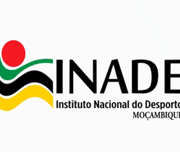
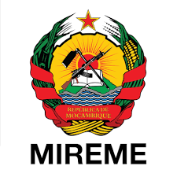
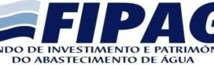
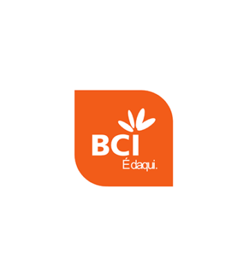

Quem Somos
QUEM SOMOS
Somos uma empresa moçambicana, localizada na cidade de Maputo, focada no desenvolvimento de soluções e realizações de projectos, tendo como ponto primordial proporcionar aos nossos clientes produtos e serviços de alta qualidade com métodos e tecnologias mais recentes de acordo com as suas necessidades.
Fundada em 2010, a nossa empresa é dirigida por profissionais altamente qualificados e com vasta experiência no fornecimento de diversos Equipamentos de Laboratório para às áreas de: Ensino e Investigação, Saúde, Águas, Ambiente e Minas, onde transmitimos segurança e confiabilidade através dos equipamentos que fornecemos.
Em nosso portfólio, após 9 anos de experiência, contabiliza-se como grande factor de destaque, a qualidade na execução dos nossos trabalhos, a formação e a fiel manutenção dos equipamentos o que nos qualifica como uma empresa respeitada e sempre indicada por nossos clientes.
Assistência Técnica Especializada
Nossa equipe é formada por técnicos especializados e treinados em Moçambique, bem como no estrangeiro, destacados pela sua competência e flexibilidade no atendimento contínuo aos nossos clientes em todas as regiões do país, desde o primeiro contacto até aos serviços pós-venda.
Para além do fornecimento do Equipamento, prestamos serviços de Instalação e Treinamento para o bom uso dos equipamentos, oferecemos garantia e executamos serviços de manutenção dentro de todo o território nacional. Possuímos diversos equipamentos de diagnóstico de avarias, reparação e calibração de equipamentos e ainda peças de reposição de excelente qualidade.
Nossa Missão
- Projectar e implementar soluções inovadoras e serviços que satisfaçam as necessidades e requisitos dos nossos clientes;
- Garantir um serviço de assistência após venda de elevada qualidade e eficiência
- Apostar em vencer pela qualidade dos serviços prestados, procurando as melhores práticas, as soluções mais inovadoras e eficientes com procedimentos mais eficazes.
Nossa Visão
- Assumir cada vez mais um papel de empresa de referência em Moçambique no Fornecimento de Equipamentos Laboratoriais no mercado.
- Destacarmo‐nos nas nossas áreas de negócio como empresa inovadora, diferenciada no produto e na globalidade do serviço;
- Consolidar a nossa posição como empresa de referência em todo o processo: fornecimento de equipamento, treinamento, instalação, reparação e manutenção e
- Valorizar a responsabilidade social e garantir viabilidade económica, satisfazendo trabalhadores e acionistas.
Nossos Valores
O que faz da Triónica Moçambique Lda., uma Empresa de referência no mercado é a credibilidade e confiança que detém entre os seus Clientes. Para tal, rege a sua actividade pelos seguintes valores:
- Inovação (nas soluções concebidas);
- Eficiência (nas respostas a qualquer solicitação);
- Eficácia (nos processos adoptados);
- Honestidade (no relacionamento com Clientes, Fornecedores e Parceiros);
- Criação de Valor (assente em soluções fiáveis e sustentáveis);
- Responsabilidade Social (compatibilizando a ética com a actividade desenvolvida);
- Reinvestimento (em meios técnicos e na formação profissional, nacional e internacional).
Nossos Clientes:




